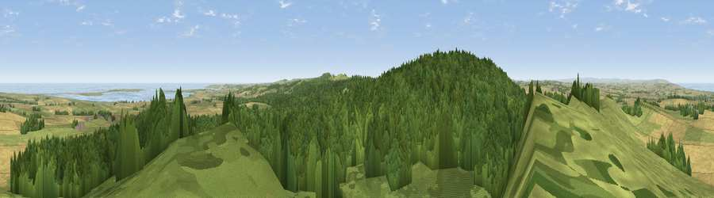

Viewpoint near Fenwick
#1424 in England · top 11% of its area beats it · near FenwickWhere it is
The exact computed spot (NU 05175 38875). Click the marker for map links.
The view, rendered

A 360° render of this exact spot computed from the terrain model, tree cover and land cover — summer colours, afternoon light, calibrated against photographs of famous viewpoints. Real trees, hedges and buildings will differ in detail.
The panorama
Grey silhouette: terrain skyline in each direction (720 bearings, Earth curvature and refraction included). Dashed green: skyline with trees (+15 m) and buildings (+8 m) as obstacles. Blue strip: how far the ground is visible on each bearing.
Where the view opens
Wedge length = distance to the farthest visible ground on that bearing (vegetation-aware). Rings at 10, 25 and 50 km.
What fills the view
65% woodland · 16% grassland · 15% cropland · 4% water
Angular shares of the visible panorama (visual magnitude), not map area. Landscape diversity 0.44 (0–1 Shannon).
Key numbers
More beautiful places nearby
The staircase of upgrades: each row has a higher view potential than everything closer. Driving times are estimates from straight-line distance, calibrated against real road routing — check an actual route before setting out.
| Place | Direction | Drive | Score |
|---|---|---|---|
| Viewpoint near Fenwick | WNW · 1 km | ~3 min | 78.7 |
| Viewpoint near Fenwick | WSW · 1 km | ~3 min | 80.7 |
| Greensheen Hill | S · 3 km | ~8 min | 87.5 |
| Viewpoint near Chillingham | SSE · 14 km | ~25 min | 88.1 |
| Ullock Pike | SW · 136 km | ~160 min | 89.4 |
| Long Side | SW · 136 km | ~160 min | 89.5 |
| Viewpoint near Easington | SSE · 137 km | ~161 min | 90.2 |
| The Knoll | S · 553 km | ~497 min | 91.0 |
55.64340, -1.91934 · source: screening · position refined by local search. Computed location — check access rights before visiting.